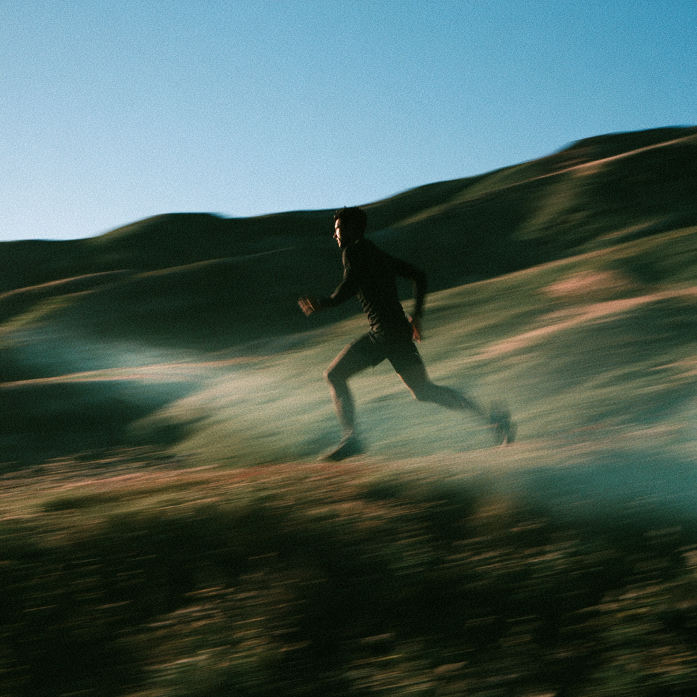

Sports · away team advantage
Nobody saw
this one.
No crowd, no clock, no result anybody prints. One week of a season.
| Day | Distance | Witnesses | Counted |
|---|---|---|---|
| Mon | 6.2 km | 0 | Counted |
| Tue | Rest | 0 | Counted |
| Wed | 8.0 km | 0 | Counted |
| Thu | 6.2 km | 1 dog | Counted |
| Fri | Rest | 0 | Counted |
| Sat | 14.5 km | 0 | Counted |
| Sun | Walked | 0 | Counted |
The season gets decided in the weeks nobody writes about.
"Your Father who sees in secret will reward you." — Matthew 6:6